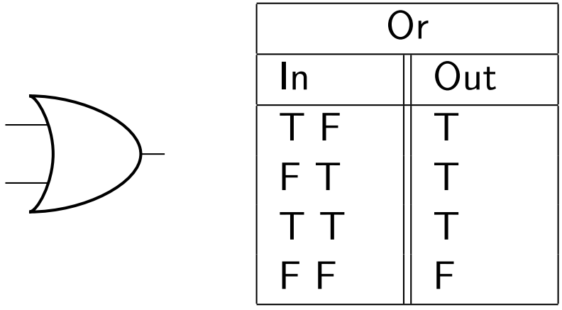

OR and NOR
The OR and NOR gates are also very aptly described by their English names.
The OR Gate
If your logic gate has two inputs, 1 and 2, the output will be true if one or the other is on, (or if both are on). This is how an OR gate works.
Here's a truth table, diagram, and Minecraft schematic.
In Minecraft, it's actually very easy to make an OR gate- you can simple connect your inputs to your output using redstone wire.
In the schematic below, we've included redstone repeaters. This is to prevent backflow (i.e. current coming into one input will not ever accidentally flow out of the other input).
Again, recall that repeaters can also be used as diodes in this fashion.
The NOR Gate
The NOR gate is exactly what you'd think it is. We simply invert the output of an OR gate, and the result is the NOR gate.
Again, you may be wondering why exactly we have an entirely new name for a gate that's just a combination of two previously estalished gates, but that's only due to its unique function. That is, the NOR gate can do special things, which is why we take time to single it out.
Below, you'll find the diagram, truth table and schematic.